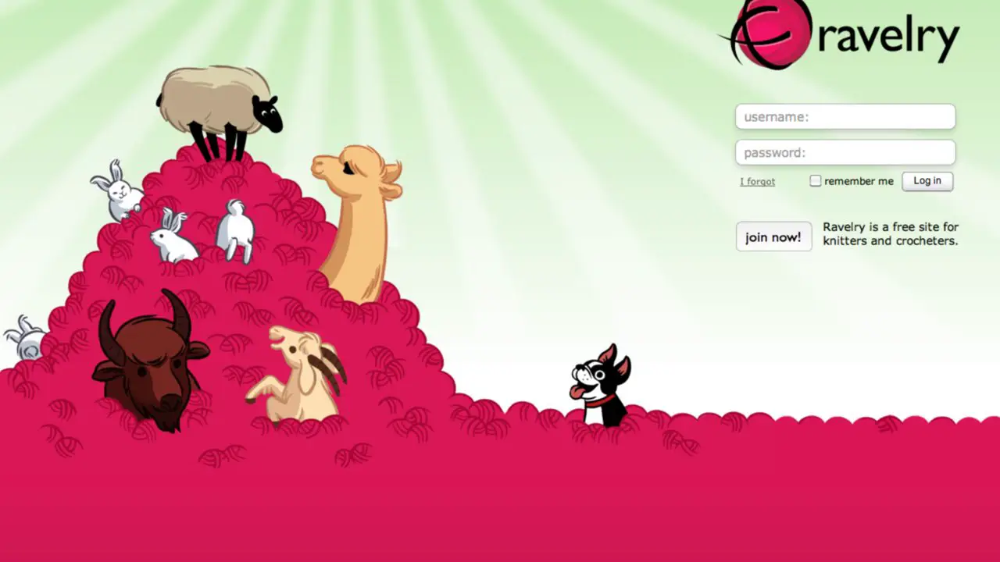
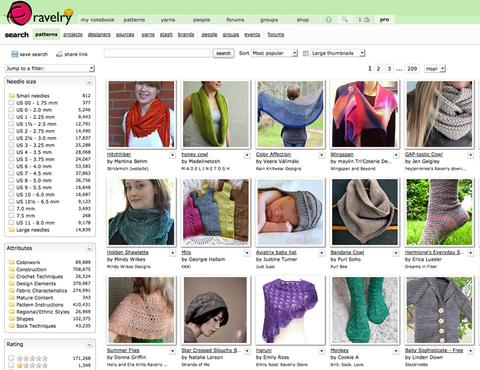
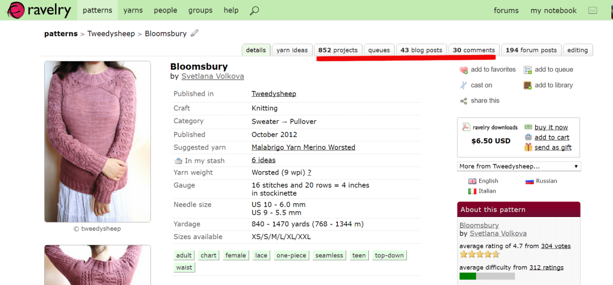

Getting Started
Project Selection
Now I know this seems like a terrible place to start.
"I'm just supposed to hit the internet and find a project and assume that I'll be able to knit it?"
Well no, not really, but picking something you really want to make is a really
great place to start. Some classes start people out with a scarf, but what if you don't wear scarves?
"You can give it away as a gift!"
Sure, but since when has the first thing you've ever made something you wanted to give to someone?
"But I really want to make a cabled sweater!"
Woah, I mean, good for you being so ambitious, you'd learn a lot of different techniques, but
something that big to start might discourage you when it takes FOREVER. For a first project there
there are a few things I can recommend, but the better thing to do it go to one of my favorite sites and choose something
for yourself.

Once you have an account you can browse all the patterns they have, by type, by difficulty.

For a first project I recommend a yarn that is a worsted weight or heavier (thicker). It is easier to work with than a
lighter yarn like a sport or fingering weight and it will knit up faster and be easier to see your stitches as you're making them.
Getting all the right stuff
Once you have your project chosen then you'll need to go shopping for all the good stuff.
On the pattern page you'll find all the information you need before you even have to download the pattern, although you'll
find all the information you'll need inside the pattern, in case it's not on your pattern's Ravelry page, but it can vary from
pattern to patter where that information is so it's harder to explain without seeing the pattern.
On your pattern's Ravelry page you'll find the Yarn Weight, the Needle Size, and the Yardage
needed to complete the pattern.
Needle Selection
Tip #1
Wooden Needles!
It seems like anytime someone who has tried to knit before tells me that they've failed, they tried to knit on metal needles. For me, bamboo or other wooden needles have a bit more grip to them and make it harder to accidentally knock your stitches off the end of your needle when you're working. Sometimes that makes for tighter knitting, but that's a problem that can be fixed with time. These can be found in your local craft stores or online. I'm a big fan of KnitPicks They also have amazing yarn at a competitve price.
Casting On
Tip #2
Long Tail Cast-on
Now a hundred years ago when I eas learning how to knit the best place to start was Knitting Help, now there are many, many excellent resources on YouTube. The inmortant part is the actual cast-on style. Learning how to "knit on" can be frustrating to new knitters and beginning with a long Tail cast-on gets you to the fun knitting part faster.
TL;DR:
- Pick a project you actually want to make.
- Use wooden needles.
- Start with a Long Tail Cast-On